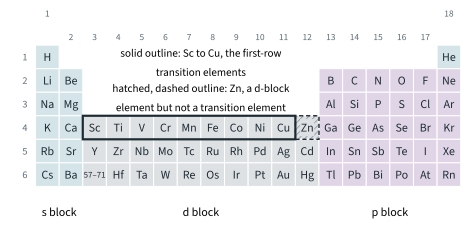
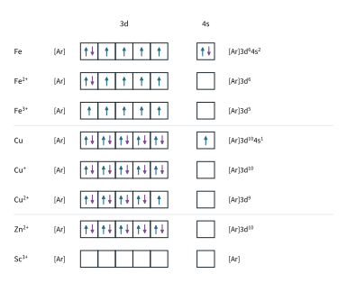
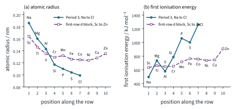
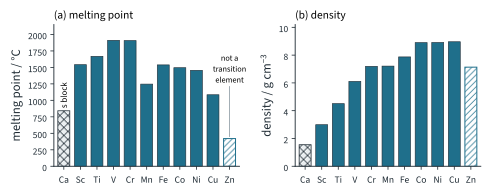
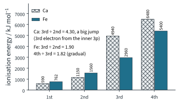
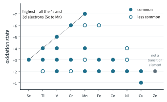

Transition Elements 1
Topic 13 · Transition Elements Part 1
On this page
Introduction
Between Group 2 and Group 13 of the Periodic Table sits a block of ten elements in each of Periods 4, 5 and 6: the d block. In Period 4, scandium to zinc, the electrons being added go into the 3d subshell, which lies inside the outer 4s. That one fact explains almost everything in this topic: why the metals are so alike across the row, why they are hard, dense and high-melting, why they show several oxidation states, why their compounds are coloured and why they make good catalysts.
9476 deals with the first row only, from scandium to copper. This Part covers what a transition element is, the configurations of the atoms and ions, the physical properties against calcium, and the variable oxidation states. Part 2 covers complexes and their colours; Part 3 covers redox chemistry and catalysis.
Key terms
You will use these terms throughout this topic.
| Term | Meaning |
|---|---|
| d-block element | An element whose highest-energy electron goes into a d subshell: in Period 4, scandium to zinc (3d). |
| Transition element | A d-block element whose atom has an incomplete d subshell, or which can form cations with an incomplete d subshell. |
| First-row transition elements | Scandium to copper (Sc, Ti, V, Cr, Mn, Fe, Co, Ni, Cu): the transition elements of Period 4. |
| Variable oxidation states | The ability of an element to form compounds in which it has two or more different oxidation states, e.g. iron(II) and iron(III). |
| Relatively invariant | Changing only a little across the row, compared with the large changes across a period of s- and p-block elements. |
What is a transition element?
Every element from scandium to zinc is in the d block (Fig 1), but not every one is a transition element. Test each against the definition:
- Scandium is a transition element. Its atom is [Ar]3d14s2: one electron in a subshell that can hold ten, so the 3d is incomplete. (Its only ion, Sc3+, is [Ar], with no d electrons at all; the atom alone is enough to pass the test.)
- Titanium to nickel all have partly filled 3d subshells in the atom, and in several of their ions.
- Copper is a transition element. The atom is [Ar]3d104s1, with a full 3d subshell, but copper forms Cu2+, [Ar]3d9: a cation with an incomplete d subshell.
- Zinc is not a transition element. The atom is [Ar]3d104s2 and its only ion, Zn2+, is [Ar]3d10. The 3d subshell is full in both, so zinc fails both parts of the definition, although it is in the d block.

You will see in Part 2 why the distinction matters: zinc compounds are white and zinc forms only one ion, whereas the compounds of the transition elements are typically coloured and show several oxidation states. Both properties come from the partly filled d subshell.
Electronic configurations
The configurations follow the rules of Topic 1 Part 2. Write the 3d before the 4s (in order of shell number), and use [Ar] for the inner 18 electrons, 1s22s22p63s23p6.
| Element | Z | Configuration | Note |
|---|---|---|---|
| Sc | 21 | [Ar]3d14s2 | |
| Ti | 22 | [Ar]3d24s2 | |
| V | 23 | [Ar]3d34s2 | |
| Cr | 24 | [Ar]3d54s1 | not 3d44s2: half-filled 3d |
| Mn | 25 | [Ar]3d54s2 | |
| Fe | 26 | [Ar]3d64s2 | |
| Co | 27 | [Ar]3d74s2 | |
| Ni | 28 | [Ar]3d84s2 | |
| Cu | 29 | [Ar]3d104s1 | not 3d94s2: filled 3d |
| Zn | 30 | [Ar]3d104s2 | not a transition element |
Chromium and copper are the two exceptions you met in Topic 1 Part 2. The 3d and 4s are close in energy, and a half-filled (Cr) or completely filled (Cu) 3d subshell gives the lower-energy arrangement, so one 4s electron moves into the 3d.
Ions: the 4s electrons are lost first
The 4s fills before the 3d, but once the 3d holds electrons the 4s is the higher in energy and the further from the nucleus. So on forming ions, the 4s electrons are lost first, and only then 3d electrons.
Worked example 1: iron and copper
Write the configurations of Fe, Fe2+ and Fe3+, and of Cu, Cu+ and Cu2+, and draw them as electrons in boxes.
(To answer this, you have to start from the atom and take electrons from the 4s first.)
- Fe is [Ar]3d64s2. Fe2+ loses the two 4s electrons: [Ar]3d6. Fe3+ loses one more, now from the 3d: [Ar]3d5.
- Cu is [Ar]3d104s1. Cu+ loses the 4s electron: [Ar]3d10. Cu2+ loses one 3d electron as well: [Ar]3d9.
Fig 2 shows them in boxes, with Zn2+ and Sc3+ for comparison. Within the 3d subshell the electrons follow Hund's rule: one in each orbital, with parallel spins, before any pairing.

Atomic radius and first ionisation energy
Across Period 3, from sodium to chlorine, the atomic radius falls by almost half and the first ionisation energy more than doubles (Topic 5). Across the first row of the d block, both hardly change. The Data Booklet values:
| Sc | Ti | V | Cr | Mn | Fe | Co | Ni | Cu | Zn | |
|---|---|---|---|---|---|---|---|---|---|---|
| atomic radius / nm | 0.164 | 0.146 | 0.135 | 0.129 | 0.132 | 0.126 | 0.125 | 0.124 | 0.128 | 0.135 |
| first IE / kJ mol−1 | 632 | 661 | 648 | 653 | 716 | 762 | 757 | 736 | 745 | 908 |
For comparison, calcium (just before scandium) has atomic radius 0.197 nm and first IE 590 kJ mol−1; across Period 3 the radius falls from 0.186 nm (Na) to 0.099 nm (Cl) and the first IE rises from 494 kJ mol−1 (Na) to 1260 kJ mol−1 (Cl). Fig 3 plots the two rows side by side.

Worked example 2: putting numbers on it
Use the Data Booklet values to compare the changes across Ti to Cu with those across Na to Cl.
(To answer this, you have to find the largest and smallest values in each row and subtract.)
- Atomic radius, Ti to Cu: largest 0.146 nm (Ti), smallest 0.124 nm (Ni), a range of 0.022 nm. Na to Cl: 0.186 to 0.099 nm, a range of 0.087 nm, four times as much.
- First IE, Ti to Cu: smallest 648 kJ mol−1 (V), largest 762 kJ mol−1 (Fe), a range of 114 kJ mol−1. Na to Cl: 494 to 1260 kJ mol−1, a range of 766 kJ mol−1, about 6.7 times as much.
(Scandium, the first of the row, is a little larger at 0.164 nm and has a slightly lower first IE, 632 kJ mol−1.) Zinc, which is not a transition element, has a noticeably higher first IE1, 908 kJ mol−1.
Melting point and density: transition elements against calcium
Calcium is a typical s-block metal: soft enough to cut, with a modest melting point and low density. The transition elements are hard, high-melting and dense. The Data Booklet has no melting points or densities, so these are literature values:
| Ca | Sc | Ti | V | Cr | Mn | Fe | Co | Ni | Cu | Zn | |
|---|---|---|---|---|---|---|---|---|---|---|---|
| m.p. / °C | 842 | 1541 | 1668 | 1910 | 1907 | 1246 | 1538 | 1495 | 1455 | 1085 | 420 |
| density / g cm−3 | 1.55 | 2.99 | 4.51 | 6.11 | 7.19 | 7.21 | 7.87 | 8.90 | 8.91 | 8.96 | 7.13 |

Melting point
All these elements are metals, held together by metallic bonding: the attraction between a lattice of positive ions and a sea of delocalised electrons (Topic 2). Its strength depends on how many electrons each atom gives to the sea and how small and highly charged the ions are.
- Calcium gives only its two 4s electrons to the sea, and Ca2+ is a large ion.
- A transition element can delocalise its 3d electrons as well as its 4s electrons, because the two subshells are so close in energy. There are more delocalised electrons per atom, and the cations are smaller with a higher charge density. The electrostatic attraction between the cations and the sea of electrons is stronger, so more energy is needed to break up the lattice: a higher melting point.
(Zinc, with its full 3d subshell, has a melting point of only 420 °C, below even calcium's.)2
Density
Density is mass ÷ volume. Compared with calcium, a transition element atom is heavier (Ar 45.0 to 63.5 against 40.1) and much smaller (atomic radius 0.124 to 0.164 nm against 0.197 nm), so more mass is packed into less volume.3 The smaller radius matters more than the extra mass, because volume goes as r3.
Worked example 3: estimating the density of iron against calcium
Assuming the atoms pack in the same way, estimate the ratio of the densities of iron and calcium from their Ar values and atomic radii. Compare it with the literature ratio. (Illustrative: real metals do not all pack the same way.)
(To answer this, you have to see that density is proportional to the mass of an atom ÷ its volume, and the volume of an atom is proportional to r3.)
Ca: Ar / r3 = 40.1 / (0.197)3 = 40.1 / (7.6454 × 10−3) = 5245
Fe: Ar / r3 = 55.8 / (0.126)3 = 55.8 / (2.0004 × 10−3) = 27 894
estimated ratio = 27 894 / 5245 = 5.32 literature ratio = 7.87 / 1.55 = 5.08
The estimate is close. Notice where it comes from: the mass ratio alone is only 55.8 / 40.1 = 1.39, while the volume ratio (0.197 / 0.126)3 = 3.82. Iron is denser than calcium mainly because its atoms are so much smaller.
Variable oxidation states
Calcium forms only Ca2+. Iron forms Fe2+ and Fe3+, manganese has compounds in every state from +2 to +7, and so on along the row. The reason is in the ionisation energies.
Worked example 4: successive ionisation energies of calcium and iron
Use the Data Booklet to explain why calcium forms only Ca2+ but iron forms both Fe2+ and Fe3+.
| 1st | 2nd | 3rd | 4th | |
|---|---|---|---|---|
| Ca / kJ mol−1 | 590 | 1150 | 4940 | 6480 |
| Fe / kJ mol−1 | 762 | 1560 | 2960 | 5400 |

(To answer this, you have to look at the ratio of each IE to the one before it.)
- Calcium: IE3 / IE2 = 4940 / 1150 = 4.30. A big jump: Ca is [Ar]4s2, and the third electron has to come from the inner 3p subshell, much closer to the nucleus. The energy released when Ca3+ compounds form could never repay it, so calcium stops at +2.
- Iron: IE3 / IE2 = 2960 / 1560 = 1.90 and IE4 / IE3 = 5400 / 2960 = 1.82. The rise is gradual, because the electrons after the 4s pair come from the 3d, which is close in energy. The extra energy needed for the third electron can be repaid by the stronger bonding (larger lattice or hydration energy) of the more highly charged ion, so both Fe2+ and Fe3+ compounds are stable.
The pattern across the row
Fig 6 shows the common oxidation states. Look for three things:
- Up to manganese, the highest state uses every 4s and 3d electron: Sc +3, Ti +4, V +5, Cr +6, Mn +7.
- After manganese the highest state falls (Fe +3 commonly, Co +3, Ni +2, Cu +2). The nuclear charge keeps rising, so the 3d electrons are held more and more strongly, and removing them all would cost too much energy.
- +2 is common from manganese on: it is the state reached by losing the two 4s electrons.

The high oxidation states are never found as simple ions. There is no Mn7+ ion: the energy needed to remove seven electrons is far too large. Manganese reaches +7 only when it is covalently bonded to oxygen (or fluorine) in an oxoanion or oxide, and the same goes for chromium in +6. You met these species in Topic 12 Part 1:
| Species | Oxidation number of the metal | Working |
|---|---|---|
| MnO4− | Mn +7 | Mn + 4(−2) = −1 |
| MnO2 | Mn +4 | Mn + 2(−2) = 0 |
| Mn2+ | Mn +2 | simple ion |
| Cr2O72− | Cr +6 | 2Cr + 7(−2) = −2 |
| CrO42− | Cr +6 | Cr + 4(−2) = −2 |
| Cr3+ | Cr +3 | simple ion |
Why Fe2+ is easily oxidised but Mn2+ is not
Fe2+ and Mn2+ are both common, but iron(II) compounds are oxidised to iron(III) much more readily than manganese(II) compounds are oxidised to manganese(III). Compare the third ionisation energies, which remove the electron that turns M2+ into M3+:
- Fe2+ is [Ar]3d6: one 3d orbital holds a pair of electrons, which repel each other. Removing one of the pair gives Fe3+, [Ar]3d5, with five unpaired electrons. IE3(Fe) = 2960 kJ mol−1.
- Mn2+ is already [Ar]3d5, half-filled with no pairing. Removing an electron breaks into this arrangement. IE3(Mn) = 3250 kJ mol−1.
So Fe2+ → Fe3+ is the easier change. Part 3 shows the same thing in the electrode potentials: E⦵(Fe3+/Fe2+) = +0.77 V, but E⦵(Mn3+/Mn2+) = +1.54 V.
Predicting oxidation states from a configuration
Worked example 5: manganese
Manganese is [Ar]3d54s2. Predict its likely oxidation states.
(To answer this, you have to count the electrons that could be lost: two 4s and five 3d.)
- Lowest: lose the two 4s electrons: +2 (Mn2+, [Ar]3d5).
- Highest: lose all seven 4s and 3d electrons: +7 (in MnO4−).
- Predicted: +2 to +7. In fact the common states are +2 (Mn2+), +4 (MnO2) and +7 (MnO4−); +3 and +6 are less common (Fig 6).
Worked example 6: copper
Copper is [Ar]3d104s1. Predict its likely oxidation states.
- Lose the single 4s electron: +1 (Cu+, [Ar]3d10).
- Lose the 4s electron and one 3d electron: +2 (Cu2+, [Ar]3d9).
Removing more 3d electrons from the full, tightly held 3d10 costs too much, so copper's states are +1 and +2, as found. Both are common, although Cu+ is unstable in water (Topic 12 Part 2).
Summary
The ideas of this Part in one table.
| Idea | Key points |
|---|---|
| Transition element | d-block element with an incomplete d subshell in the atom or in a cation. Sc (3d1) to Cu (Cu2+ 3d9); Zn (3d10 in atom and ion) is not one. |
| Configurations | 3d written before 4s, with [Ar]. Cr [Ar]3d54s1, Cu [Ar]3d104s1. Ions lose the 4s electrons first: Fe2+ [Ar]3d6, Fe3+ [Ar]3d5. |
| Radius and first IE | Relatively invariant (Ti to Cu: 0.022 nm, 114 kJ mol−1; Na to Cl: 0.087 nm, 766 kJ mol−1): the added 3d electrons shield the 4s electrons from the extra nuclear charge. |
| m.p. and density | Higher than calcium (literature values): 3d and 4s electrons delocalised, smaller cations of higher charge density; heavier and much smaller atoms. |
| Oxidation states | 3d and 4s close in energy: gradual successive IEs (Fe 1.90, 1.82; Ca 4.30). Highest = all 4s + 3d up to Mn (+7), then falls; high states only bonded to O (or F). |
| Predicting | Lowest: lose 4s (+2; +1 for copper). Highest: all 4s + 3d up to Mn. Which are common needs data. |
Additional information
- Beyond the syllabus: the slight rise in atomic radius at copper and zinc (0.128 and 0.135 nm, against 0.124 nm for nickel) and the higher first IE of zinc need a more detailed model of how a nearly full or full 3d subshell shields the 4s electrons. You do not need it. ↩
- Beyond the syllabus: in zinc the full 3d10 subshell is held tightly and its electrons are not used in the metallic bonding, so only the two 4s electrons are delocalised, as in calcium. Manganese's dip (1246 °C) comes from its unusual, complicated crystal structure. ↩
- Beyond the syllabus: most transition metals also pack their atoms more closely than calcium does, which adds to the effect. ↩